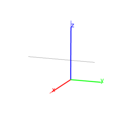

13.5.8 Common perpendiculars to lines in space: common_perpendicular
The common_perpendicular command takes as arguments two lines.
common_perpendicular returns and draws the common
perpendicular to the two lines.
Input:
L1 := line(point(1,1,0),point(0,1,1));
L2 := line(point(0,-1,0),point(1,-1,1))
then:
common_perpendicular(L1,L2)
Output:
